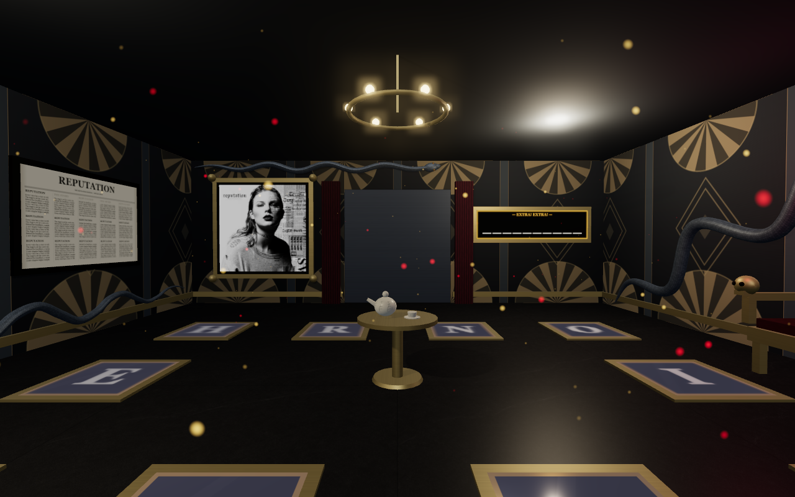
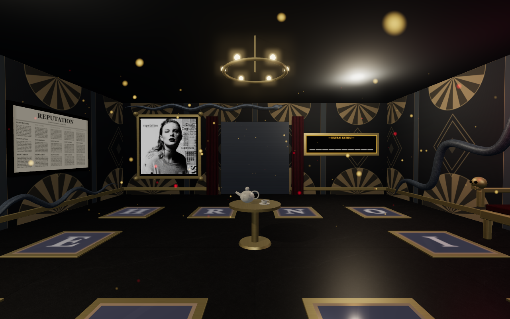

REVISIÓN SALA POR SALA
03 · Reputation
Carbón art déco, plata oscura, terciopelo vino y porcelana pintada.


ANTESAHORAArrastrá el control para comparar. Capturas reales del juego.
- Piedra satinada y paredes con motivos a escala real; metales cepillados con brillo controlado.
- Serpientes con escamas finas, vientre y ojos diferenciados; tapicería con costuras y cortinas con pliegues.
- Muebles con bordes suaves; calaveras con nariz y dientes; taza hueca, té y asas reales.
- Periódicos tipográficos, espejo con bordes envejecidos, bate con madera y agarre, vinilo con surcos.
Prueba completa: aprobadaRecorrido de letras correcto e incorrecto, bate, ocho golpes contra cuatro serpientes, espejo secreto, premio y puerta.
51 materiales físicos revisados · 25 mapas referenciados · ningún material físico sin mapa de color.
Objetos y detalles
REVISIÓN SALA POR SALA
04 · Lover
Pasteles suaves, acabado perlado, piedra rosa y tapicería con trama y costuras.
Arrastrá el control para comparar. Capturas reales del juego.
- Paredes con nubes suaves y corazones discretos; damero con vetas finas y juntas, techo con microtextura.
- Sofá y cojines con tejido y pespuntes; asientos separados, ribetes y patas; puf tapizado.
- Cofre biselado con herrajes, bisagras y forro; altar y pedestal perlados; corazones con acabado satinado.
- Mariposas recortadas con nervaduras; nubes de textura fina; cartel con soporte metálico y pistas legibles.
- Túnel con relieve fino, luces atenuadas y tocadiscos interior con vinilo detallado.
Prueba completa: aprobadaCorazón bajo el cojín, orden incorrecto y corrección del arcoíris, cuatro botones del cofre, vuelo del premio, disco secreto y puerta.
121 materiales físicos revisados · 14 mapas referenciados · ningún material físico sin mapa de color.
Objetos y detalles
REVISIÓN SALA POR SALA
05 · Folklore / Evermore
Corteza, suelo con hojarasca, follaje abierto, musgo, madera, nieve e hielo.
Arrastrá el control para comparar. Capturas reales del juego.
- Corteza con relieve y anillos de crecimiento en los cortes; ramas conectan la copa del árbol central.
- Hojas y agujas con recorte alfa y huecos; escala afinada, copas más suaves y brisa en shader.
- Sotobosque instanciado al borde de los caminos; hojas que caen con silueta real; huellas con suela.
- Tierra con hojarasca detallada y transición a nieve granular; hielo con fracturas y burbujas.
- Cabaña con veta a escala, tejado de tablillas, marcos de ventana y cartas con texto y fibras.
- Faroles con vidrio estriado y jaulas metálicas en un solo lote instanciado; guardianes de piedra, cofre helado y llave de metal.
Prueba completa: aprobadaCódigo 743, bloqueo de la caja sin recorrido, trampa y reinicio, cuatro guías y cruces, guardianes, notas, sauce, llave y puerta.
69 materiales físicos revisados · 17 mapas referenciados · ningún material físico sin mapa de color.
Objetos y detalles
REVISIÓN SALA POR SALA
06 · Midnights
Azul nocturno, jacquard, tapicería, terrazzo, mecanismos de metal y vidrio.
Arrastrá el control para comparar. Capturas reales del juego.
- Paredes de jacquard y cortinas con pliegues; suelo de terrazzo azul conservando todos los números del reloj.
- Sillones con bordes suaves, costuras, asientos y ribetes; madera en patas y mesas; alfombra con grano textil.
- Teléfono con disco numerado, auricular curvo y cable espiral; pantallas estriadas y brillo más contenido.
- Piezas de ajedrez con collares torneados y corona; acabados de piedra y marco fino del tablero.
- Relojes con esferas de mayor definición, grabado fino y números cardinales; metales diferenciados en engranajes y llave.
- Bola de espejo con teselas y luna con detalle de cráteres; bruma y reflejos ajustados para mostrar los materiales.
Prueba completa: aprobadaBloqueo del reloj antes de la llamada, código 1331, hora 3:13, mate Tc7–a7, reloj incorrecto y mezcla, tres engranajes, trece orbes, llave y puerta.
91 materiales físicos revisados · 15 mapas referenciados · ningún material físico sin mapa de color.
Objetos y detalles
Cómo quedó construido
Los materiales nuevos se generan una sola vez y comparten mapas entre objetos. Los árboles y el sotobosque siguen instanciados; las carcasas de los faroles se dibujan en un solo lote. El follaje usa recorte alfa, conserva la escritura de profundidad y recibe una brisa suave mediante un uniforme de shader.
Se reutilizan los mapas de entorno y las luces existentes. No se añadieron reflejos planos, nuevos pools de luces ni cargas de GIF en cada fotograma. El viento sí requiere un pequeño trabajo de GPU; no se ha medido el rendimiento en dispositivos.
Las pruebas recorren interacciones reales. Los accesos internos de diagnóstico solo se inyectan desde el script del navegador de pruebas. Fearless y 1989 conservan su retexturizado anterior.
Inventario y procedencia de las texturas · Prompts de generación · Script de verificación